Cátedra 10: Entropía y Ciclo de Carnot
El ciclo de Carnot como la máquina más eficiente posible entre dos focos, la definición de entropía como función de estado, y la desigualdad de Clausius.
Temas que cubre
- Ciclo de Carnot: 4 etapas (isotérmica caliente, adiabática, isotérmica fría, adiabática)
- Eficiencia de Carnot: $\eta_C = 1 - T_f/T_c$ (máxima posible)
- Teorema de Carnot: ninguna máquina entre los mismos focos puede superar $\eta_C$
- Definición de entropía: $dS = \bar{\delta}Q_{\text{rev}}/T$
- Entropía como función de estado
- Desigualdad de Clausius: $\oint \bar{\delta}Q/T \leq 0$ (= para reversible, < para irreversible)
- Principio de aumento de entropía: $\Delta S_{\text{universo}} \geq 0$
Conceptos clave
Ciclo de Carnot
El ciclo ideal más eficiente entre dos focos a $T_c$ y $T_f$. Sus 4 etapas son: (1) expansión isotérmica a $T_c$, (2) expansión adiabática hasta $T_f$, (3) compresión isotérmica a $T_f$, (4) compresión adiabática de vuelta a $T_c$. Todo el ciclo es reversible.
Entropía $S$
Función de estado definida por $dS = \bar{\delta}Q_{\text{rev}}/T$. La integral depende solo del estado inicial y final (no del proceso), lo que la hace función de estado. En procesos irreversibles, la entropía del universo aumenta; en reversibles, se conserva.
Teorema de Carnot
Ninguna máquina que opere entre los focos a $T_c$ y $T_f$ puede tener eficiencia mayor que la máquina de Carnot. La máquina de Carnot es la única que alcanza el máximo, y solo si opera de forma completamente reversible.
Desigualdad de Clausius
Para cualquier ciclo: $\oint \bar{\delta}Q/T \leq 0$. La igualdad vale para ciclos reversibles; la desigualdad estricta para ciclos irreversibles. Esto es el punto de partida para demostrar que la entropía es función de estado.
Fórmulas fundamentales



Qué hay que entender
- La eficiencia de Carnot depende solo de las temperaturas de los focos, no del fluido de trabajo ni del diseño de la máquina.
- Para calcular $\Delta S$ de un proceso irreversible: diseña cualquier proceso reversible entre los mismos estados y calcula $\int \bar{\delta}Q_{\text{rev}}/T$. El resultado es el mismo $\Delta S$.
- La entropía de un gas ideal al cambiar de $(T_i, V_i)$ a $(T_f, V_f)$: $\Delta S = Nk_B\ln(T_f/T_i)^{3/2} + Nk_B\ln(V_f/V_i)$.
- El ciclo de Carnot en el diagrama $P$-$V$ es un cuadrilátero curvo de dos isotermas + dos adiabáticas. El trabajo neto es el área encerrada.
- "La entropía del universo aumenta en cada proceso irreversible" es la esencia de la Segunda Ley.